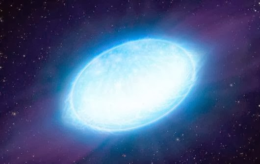
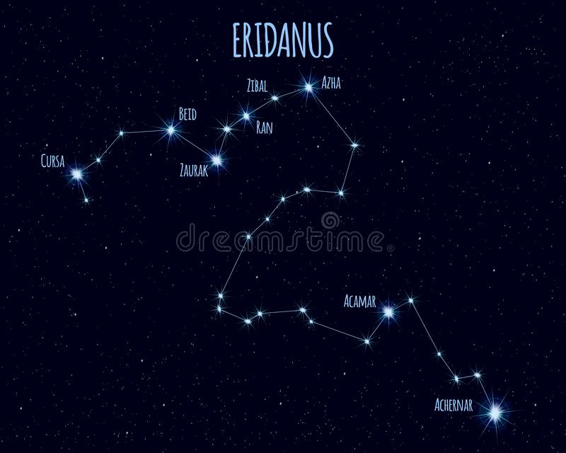

Achernar

FOTO ESTRELA ACRERNAR
Achernar é uma estrela com uma velocidade de rotação muito rápida. Devido a isso esta é
uma estrela “achatada” nos pólos. Seu diâmetro equatorial é pelo menos 50% superior ao diâmetro polar.
Aliás, esta é a estrela mais “achatada” atualmente conhecida. O diâmetro polar de Achernar é de aproximadamente
7,3 vezes o diâmetro do Sol, já o seu diâmetro equatorial é de aproximadamente 11,4 vezes o do Sol
Achernar é uma estrela branco-azulada situada a aproximadamente 144 anos-luz de nós.
A sua massa é de aproximadamente 7 vezes a massa solar. Seu brilho intrínseco é mais de
1000 vezes o brilho do Sol, se levarmos em conta apenas a luz visível. Se levarmos em conta
a totalidade de energia, então esta estrela emite mais de 3000 vezes energia que o Sol.
 FOTO CONTELAÇÃO DA ESTRELA ACHERNAR
Achernar, a estrela alfa da constelação de Erídano (ou Eridanus) e a mais brilhante de
sua constelação, . Trata-se na realidade de um sistema binário de estrelas
encontra-se a aproximadamente 144 anos-luz da Terra e sua magnitude aparente é de +0,45,
já a sua luminosidade é cerca de 1076 vezes a do Sol. Também é uma estrela que gira muito rapido, e em virtude disso, o raio
do equador é pelo menos 50% maior que o raio dos pólos.